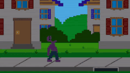

.jpg)
D̷̘͕̺͒̆e̷̙̺̖̊̆̃̒͑́͘s̸̨͆͠E̵̲̠͈̙̰͔̣̅a̴̞̠̲̲͆̊̊̀̊̕͠ṇ̴̭̖̈̀ enterrAr Los SucEsos, coN la verdad Falza, que s̸̡̮̭̤̼̬̙͖͈̩̄͂̈́̕ő̵̢̞̙͔̞̝̠͇͓̅n̸͎̹̼̙̳̭͓̬̏̐̀͐͜͝ las historias úrbanas. Quieren esconderlo como Yo escondí esas almas ị̵̯̞̖̮̫̺̑̈́̌͘N̸̝͈̾o̶̭̗̺̳͕̊̓̅̀̎̃̆̓͝c̴̨̹̮͔͓͖͖̻̈́̃̅̈́͂͘͠E̷͕̰̥̜͙͐̌͐͂͒̂͐͘n̵̤̏̿t̵̢̞̬̲͑͌͋̇̃͒͑̈̂ę̵͈̭͖͈̬̖̅̇͗͐͜͠ś̷̞̩̗̙̹̪̬̜͇̔̽̒̎͝ en aniMales de mEtal.
La imágen pública no es más que eL suElo de MAdera ocuLtando eL coraZón latente de uN Anciano MueRto..
.jpg)
-‘’Fazbear Entertainment no se hace responsable por daños a la propiedad o la persona.’’
-’’Al descubrir que daños o la muerte se han producido, un reporte de la persona será presentado dentro de 90 días, o antes. La propiedad e instalaciónes han sido cuidadosamente limpiadas y blanqueadas, y las alfombras han sido reemplazadas.’’
_‘’Trata de no pegarte al seguro y de no tocarlo en ningún momento ya que podrías aflojarlo, Esto causaría que se suelte en cualquier momento. En caso de que el seguro se suelte mientras usas el traje, por favor intenta alejarte de areas con clientes antes de desangrarte para no arruinarle la experiencia al cliente.’’
Estos son algunos de los diálogos dichos en las cintas VHS instructoras . Ellos sabían lo peligrosas que eran esos malditos trajes, pero les importaba poco y nada.
Escondieron diversas muertes de empleados en las instalaciónes. Escondieron el incidente de la mordida del 87 en la que un empleado perdió el lóbulo frontal a causa de un animatrónico, lo mordió y el hombre sobrevivió. De algún modo siguen en el negocio como si fuera parte del show, evitando hablar del tema.
La muerte de mi hijo.. Evan Afton, su hermano Michael y unos amigos suyos se lo llevan en contra de su voluntad hacia aquél oso amarillento y encajan su cabeza entera dentro de las fauces del animatrónico, como si se tratara de un aperitivo para la fiera, o lanzar carroña a los buitres. Cerrandose y aplastondole su cráneo..
Mi hija Elizabeth Afton. También fue un animatrónico lo último que su joven conciencia pudo contemplar, solamente que el indeseable sentimiento agrio de la desesperación fue fugaz.. ya que la finiquitación de su existencia fue a quemarropa. Baby. Verás, el tipo de robot que es Baby tenía la función de secuestrar y asesinar niños dentro de su cuerpo, mantenía alejada de ella a mi hija a toda costa, pero eligió desobedecer. Aprovechó cuando mi atención estaba puesta en otros asuntos. Elizabeth, impulsada por la fascinación que le producían las habilidades de Circus Baby de inflar globos y fabricar helados; se acerca a ella. La alimaña gélida de robusta piel, contrácturada expresión y pintoresca vestimenta, le ofreció un helado, mostrandose inocente y siendo un señuelo perfecto para una mente tan infantíl. Mi hija, Elizabeth, de manera alégre habrá recibido ese helado que le salió del estómago al robot, causando que este la sugetara, y forzadamente la ingiriera dentro suyo. Al inspeccionar al animatrónico, nO pude enContrar más que a mi Hija, metida a la fuerza en un reducido espacio frío y lugubre, luciendo irreconocible e inerte.
.webp)
Tiempo después, en las instalaciones subterraneas de Circus Baby's Pizza World, Michael es encerrado en un cuarto lugubre llamado ¨Scooping Room¨, con animatrónicos desmantelados, a causa del ¨Scooper¨, una maquina que se encarga de hacerle eso a los animatrónicos. Pero Ennard, un robot que ha nacido de mis inventos, decidió llevarlo más allá y se preguntó ¿Qué pasaría si lo usamos para desmantelar humanos?.. Entonces.. Michael luego de eso queda moribundo, retorciendose en ese lugar que parecía ser su tumba, pero el objetivo de Ennard no era dejarlo a su suerte allí. Aprovechando las aberturas que el Scooper dejó en su cuerpo, Ennard y demás animatrónicos (entre estos, se encuentra Baby, el animatrónico el cual mi hija Elizabeth poseé) compactados en una amalgama de cables y ojos de plata se introducen al cuerpo de mi hijo para usarlo a modo de disfraz. Una vez fuera del local, estos son libres, y Michael queda desecho en la vereda.. pero este no fallece, ya que cuenta con una sustancia llamada ¨Remanente¨ el cual es el que me permite a mi vivír siendo incluso el cadáver que so. Por ende, Michael se repone, comienza a buscarme. 
(Ennar y los demás saliendo del cuerpo de Michael.)
Y por lo que veo, mientras estuve ausente, Fazzbear Entertainment se apropió de mis creaciones. De los animatrónicos que hice yo, William Afton, de Afton Robotics, mi antigua companía.
El purgatorio no se llevó todo de mí. Yo aún sigo aquí.
.jpg)
.png)
↓
↓
↓
.jpg)
.jpg)
Alma y metal frío comparten vida.
.jpg)
I always come back.